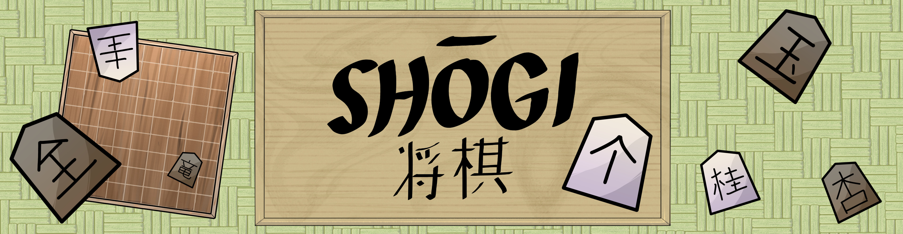
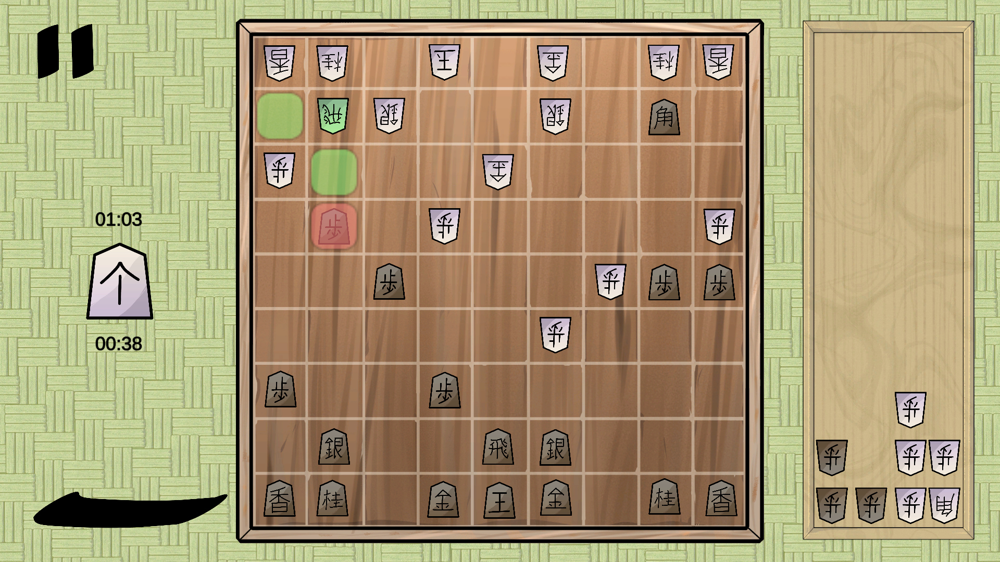
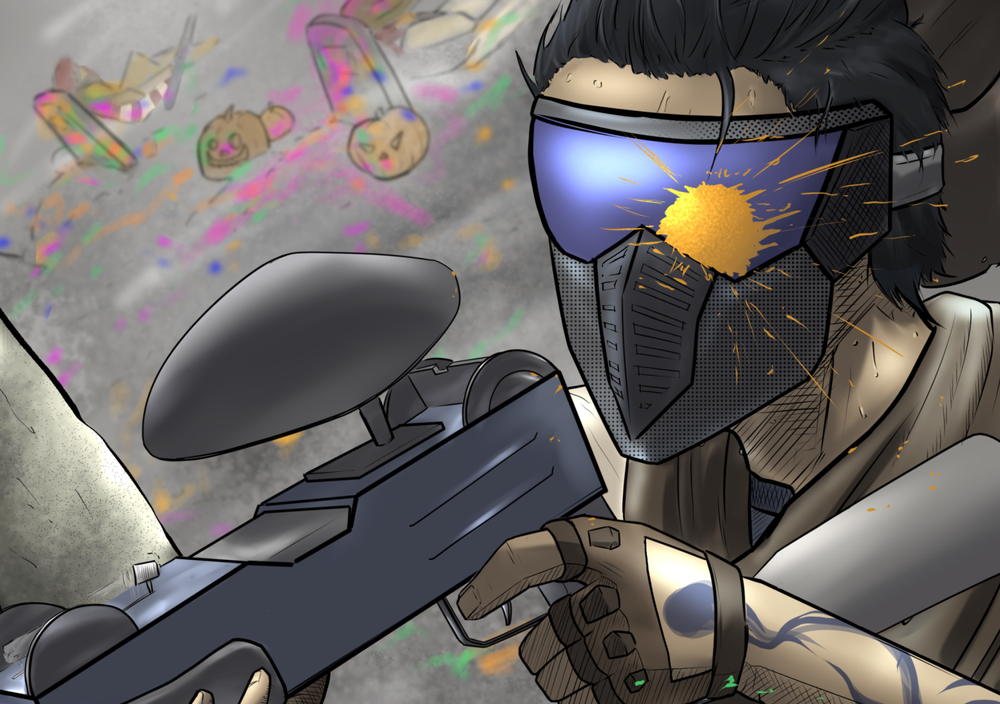
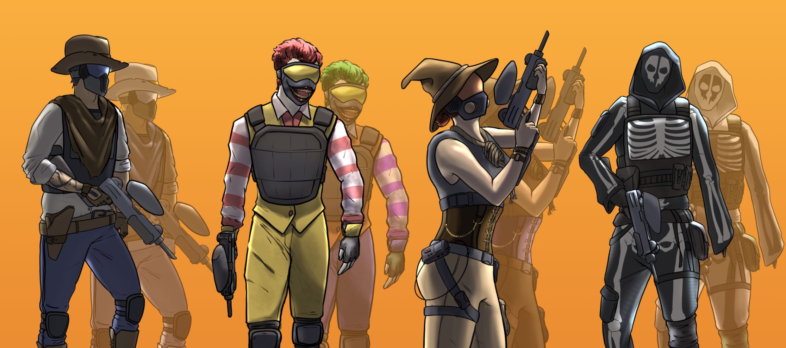
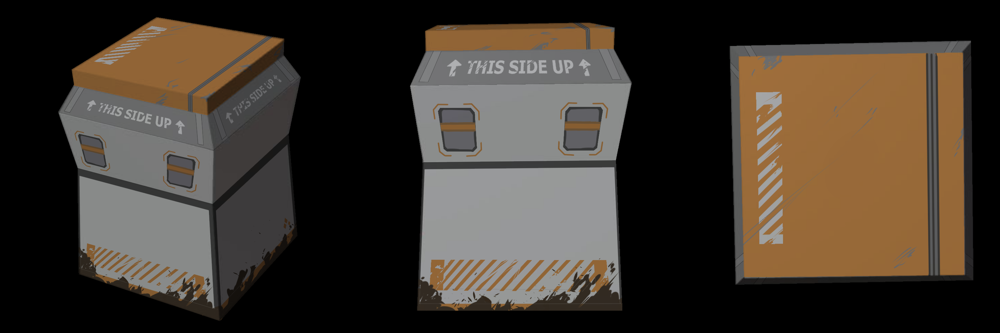
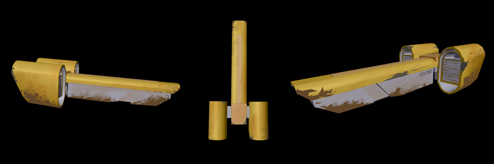
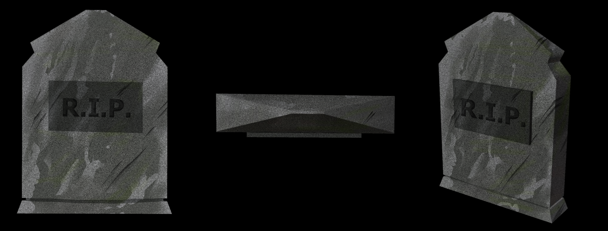
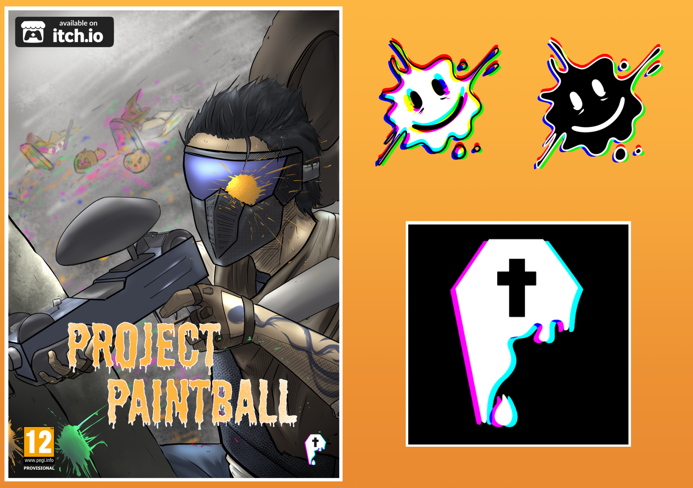

January, 2025
Shōgi for Beginners
Step into the captivating world of Shōgi for Beginners, the ultimate digital version of the classic Japanese strategy game. Designed with new players in mind, this game features tutorials, helpful hints, and difficulty levels to guide you every step of the way. Whether you’re a complete novice or looking to have some fun, Shōgi for Beginners makes mastering this timeless board game both fun and accessible. Download now and experience the perfect blend of tradition and innovation!
This video game was developed as part of the 'Videogame Engineering' course, entirely by myself, utilizing various programming patterns to their full potential. I handled every aspect of the game's development except for the music, which was sourced from a public post on SoundCloud and is properly credited in the game.
I was responsible for creating the game's visuals, UI, mechanics, and programming, ensuring each part fit the project's scope and style.

Every aspect of the game is based on the classic Japanese game but customized for a Western audience, drawing inspiration from its Western counterpart, chess.

December, 2024
Project Paintball
Dive into the colorful chaos of Project Paintball! This fast-paced indie FPS delivers non-stop fun as you splatter your way to victory. Choose from quirky costumes, unleash unique abilities, and master vibrant, one-of-a-kind maps. Project Paintball is all about creative tactics and hilarious paint-fueled action. Team up or go 1v1—just make sure you're ready to leave your mark in this wildly entertaining paintball showdown!

This video game is part of a project developed for the course 'Games for Web and Social Media', created in collaboration with five other students under the name Psycoffin Studios. My role in this project included working as a gameplay designer, concept artist, 2D designer, and texture designer.
I was responsible for designing the game's characters, maps, and props, ensuring each element aligned with the overall theme and style.

Every aspect of the game is inspired by the concept of a Halloween costume party, where the characters' imaginations run wild as they engage in a fun and friendly paintball match.



Additionally, I created the visual identity of the game, including its logos and cover art, to deliver a cohesive and engaging aesthetic that captured the essence of the project.

We also conceived the game's marketing and monetization strategies, focusing on product placement and partnerships with various paintball companies to feature their brands in our game's maps and items.